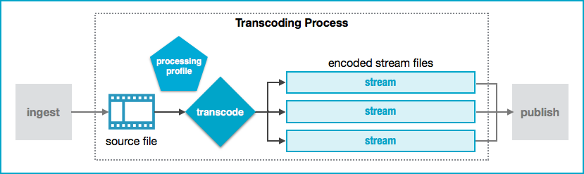
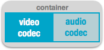

Transcoding is a process that converts a video file from one format to another so that the video can be played across various platforms and devices. The Ooyala Transcoding Service (OTS) takes video and audio assets that a customer has loaded into Backlot (see
Ingestion) and performs whatever processing is required to prepare them for optimized playback.
Transcoding involves:
- converting video content into multiple streams of varying bitrate and resolution appropriate
for all target devices
- encryption and packaging for DRM
- storing processed content and delivering via a content delivery network (CDN) to expedite
playback
OTS Run-time Workflow
The following figure shows what occurs to a video
asset after being loaded into Backlot.

Using a processing profile associated with the Ooyala account, the OTS converts the
uploaded source file to one or more encoded streams that are stored on a content delivery network
(CDN) for optimized playback.
Source Files
Source files are videos that have been
loaded into Backlot (see
Ingestion). They
represent the input into the transcoding process. Each video file consists of a container that
includes:

Note: Ooyala recommends source files that use the H.264 format for video codec and AAC
format for audio codecs.
For a list of supported container formats, video codecs and audio
codecs, as well as file conventions, see
Supported Ingest Formats.
Processing Profile
A processing profile mandates the number,
formatting, and characteristics of the encoded streams that the transcoding process will generate
for an ingested asset, such as:
Encoded Stream Files
Encoded stream files represent the output of the transcoding
process. Transcoding produces a collection of specific streaming formats that are optimized for
playback across various platforms and devices. These files reside in a storage location (origin)
that the CDN can access for delivery.
A variety of validations can be performed to ensure the
correctness of the encoded stream files. If you would like some or all of the following checks to
be performed, contact your Ooyala account representative. Choose from the following types of
validation:
Pre-Transcoding Video Quality Check
- Codec
- Bitrate
- Frame rate
- Height
- Width
- Color space
- Bit depth
- Aspect ratio
- Chroma subsampling
- GOP size
Pre-Transcoding Audio Quality Check
- Codec
- Bitrate
- Frame rate
- Compression mode
- Channels
Post-Transcoding Output File Check
- Duration mismatch
- Presence of streams based on the processing profile
- Presence of manifest
- Peak signal-to-noise ratio (PSNR) validation
Playback Support
Ooyala supports streaming to the following players:
Note: If you plan to deliver to other players and devices (including Silverlight, Consumer
Electronics Devices like LG, Samsung, etc), contact Sales, your Customer Success Manager, or
Technical Support.
Setting up OTS
During customer onboarding, you work with your Ooyala
representative to define your transcoding requirements and design your transcoding policies.
Every customer starts with a default profile that provides for basic output streams (such as MP4
and HLS streams at various bitrates) and no DRM or encryption. Your Ooyala representative helps
you customize one or more processing profiles to implement your transcoding policies. For more
information, see Transcoding Setup.
Regardless of how you load a video asset into
Backlot (via the OIS, the Backlot UI, or the Backlot REST API), transcoding begins automatically
according to whatever processing profile you have - default or customized. You can even
customize multiple profiles so that, if you use OIS with a manifest file, you can choose which
processing profile to apply to an asset during the transcoding process.
Transcoding Considerations
Your viewers will view your content on many
different device types, in different countries, under different circumstances, and over
different connections where the bandwidth varies widely. One of the key challenges with
streaming video is finding the right balance of bitrate (amount of bits in one second of video)
and resolution (amount of pixels in a second of video) for each viewer’s connection and device.
When determining which encodes to create, consider the following:
- Playback environment
- Security requirements
- Playback quality and its associated operational costs
- Number of encodings - The more encodings you have, the more options the player has to
optimize content for the device and available bandwidth. The number of encodings available to
your account is determined by the encoding profile that you choose.
In-Region Ingestion and Transcoding
Leveraging Azure’s Media Service,
Ooyala Ingestion Service and Ooyala Transcoding Service support ingestion and transcoding
of video assets performed in your local region. This reduces transcoding time and keeps content
geographically contained.
In-region ingestion is supported for files uploaded using the Backlot API, FTP, or Aspera.
To see whether your account is eligible for in-region ingestion and transcoding,
contact your Ooyala account representative.
Limitations:
- Not supported for processing profiles that include asset files in Flash format
- Not supported for processing profiles that mix clear and DRM assets
- Does not support multi-DRM configuration for the same muxing format
- Does not support thumbnail
- Does not support closed captions
Transcode Processing Queue
The standard processing queue for VOD content follows FIFO (first in first out) logic. Every customer can process 10 jobs in parallel - additional assets remain in the queue and are processed based on FIFO.
In addition to the standard processing queue, an express processing queue is available. The express processing queue can process 5 jobs in parallel. A job in the express processing queue gets higher priority than jobs in standard processing, and is picked ahead of jobs in the standard processing queue. The express processing queue also uses FIFO logic, and any more than five assets submitted to this queue remain queued until an open slot is available.
See here for more details about express
processing.
Transcoding and Billing
OTS is a billable service. Your Ooyala account will
be charged according to billing metrics, such as transcoded minutes and delivery. Factors that
can affect billing include the number of encoded stream files, the length of the source video,
and higher bitrates (which can increase delivery usage). For billing details, contact your Ooyala
representative.